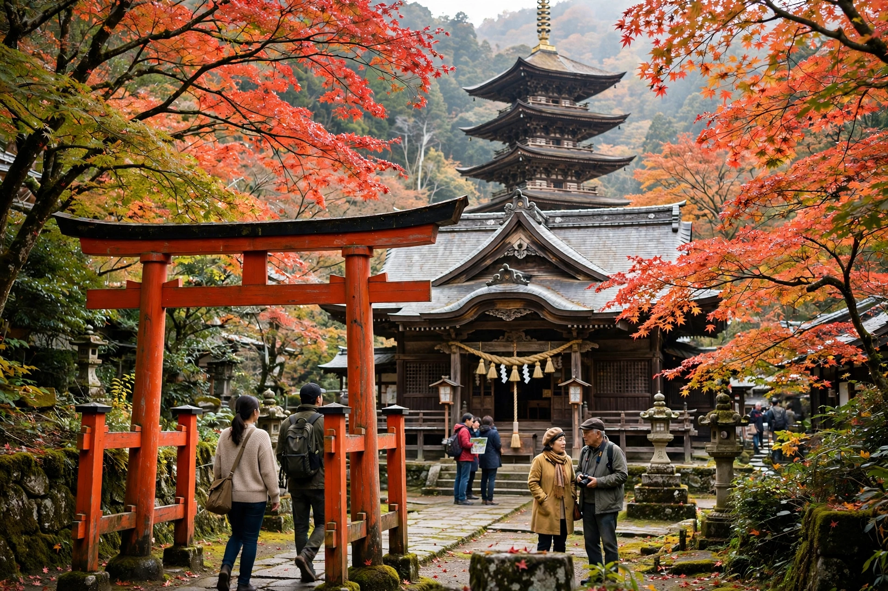

Religion in Japan
| Religion in Japan | |
| Main traditions | Shinto, Buddhism |
|---|---|
| Other | Christianity, folk religion, new religions |
| State religion | None (secular constitution) |
Religion in Japan is dominated by Shinto and Buddhism, which have coexisted and intermingled for over a thousand years. Most Japanese participate in practices of both traditions — visiting Shinto shrines for births and New Year observances, and holding Buddhist funerals — while surveys find that a majority describe themselves as having no personal religion. This pattern is often summarized by the saying that Japanese are "born Shinto, marry Christian, and die Buddhist."

Shinto
Shinto, the indigenous tradition of Japan, centers on the veneration of kami — spirits associated with natural phenomena, ancestors, and places — at tens of thousands of shrines (jinja) across the country. It has no scripture, creed, or concept of absolute good and evil, and its rituals emphasize purity, gratitude, and communal festivals (matsuri).
Buddhism
Buddhism arrived from Korea in the sixth century CE and spread under state patronage, notably from Prince Shōtoku. Major schools include Pure Land (Jōdo), Nichiren, Zen, and Shingon. Buddhism deeply shaped Japanese art, literature, and funerary practice; most Japanese funerals remain Buddhist.
Syncretism and history
For most of Japanese history Shinto and Buddhism were fused in a system called shinbutsu-shūgō, in which kami were seen as manifestations of buddhas. The Meiji government forcibly separated them in 1868 and promoted State Shinto as a civic cult until 1945, when the Allied occupation disestablished it and the postwar constitution guaranteed religious freedom and separation of religion and state.
Other religions
Christianity, introduced by Jesuit missionaries in 1549 and later suppressed for over two centuries, is professed by roughly one to two percent of the population, though Christian-style weddings are popular. From the nineteenth century onward, numerous "new religions" (shinshūkyō) such as Tenrikyō and Sōka Gakkai have drawn millions of adherents. Confucian and Taoist ideas have also influenced Japanese ethics and folk practice.